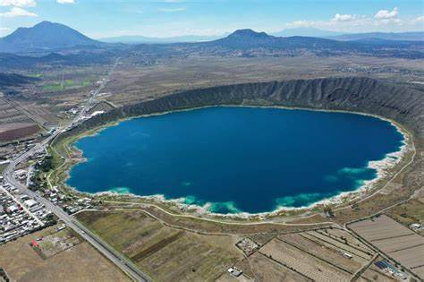
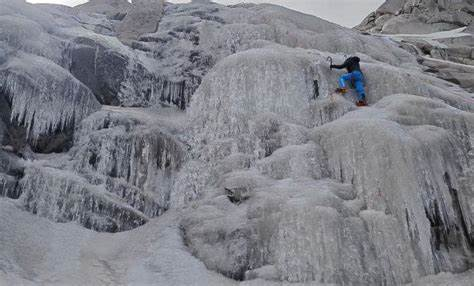
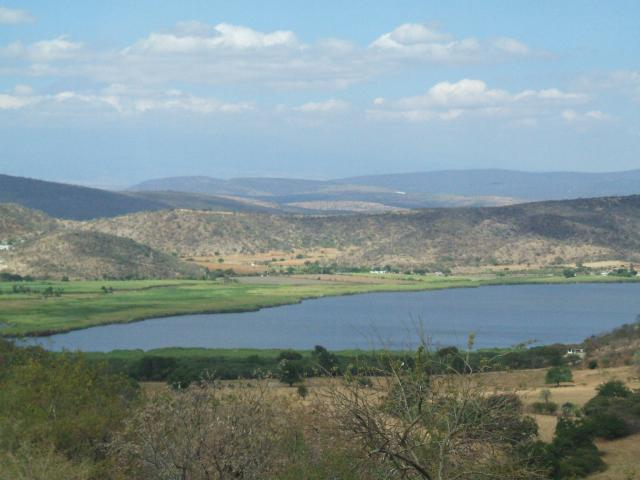
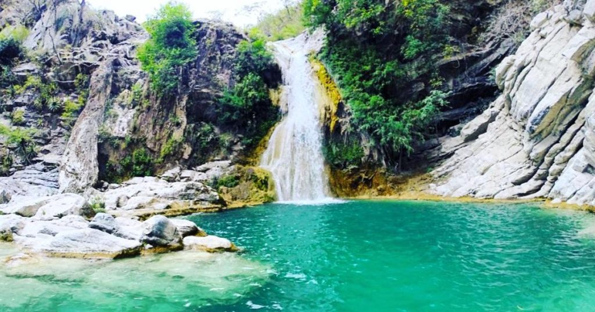
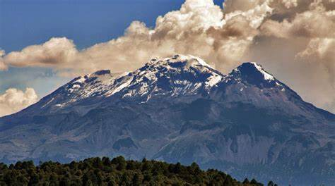
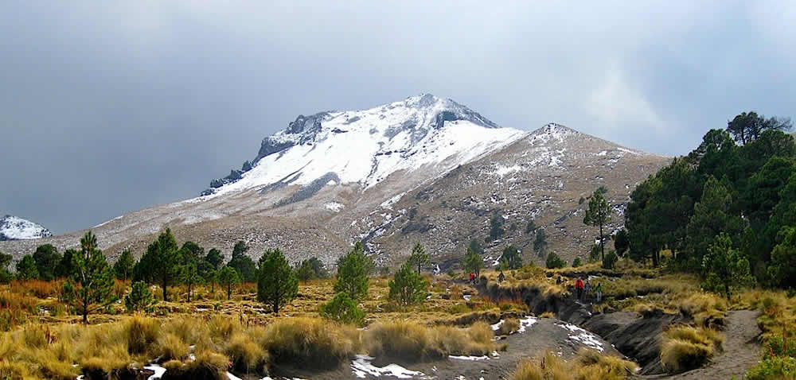

Lugares Naturales en Puebla

Laguna de Alchichica
Un cráter volcánico con aguas de colores impresionantes, conocido como el mar de Puebla.
Más información

Cascadas de hielo del Citlaltépetl
Formaciones de hielo únicas en la cara nororiente del volcán Citlaltépetl.
Más información

Laguna de San Juan Epatlán
Un cuerpo de agua rodeado de cañaverales, ideal para relajarse y disfrutar de la naturaleza.
Más información

Cascadas de San Agustín Ahuehuetla
Dos impresionantes caídas de agua en un entorno natural poco explorado.
Más información

Parque Nacional Iztaccíhuatl – Popocatépetl
Un parque nacional que ofrece vistas espectaculares de los volcanes Iztaccíhuatl y Popocatépetl.
Más información

Parque Nacional La Malinche
Un parque nacional con rutas de senderismo y vistas panorámicas desde la cima del volcán La Malinche.
Más información